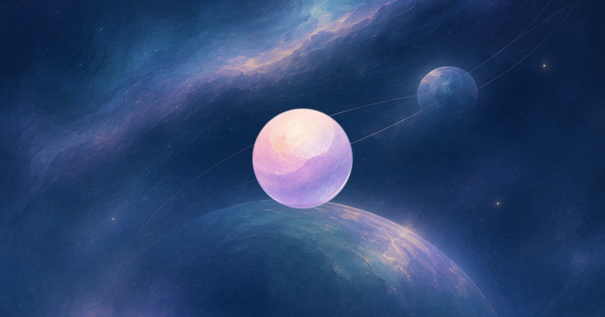

夜潮
深藍星空與紫色光暈交織，像一片緩慢展開的夜色。讓心事慢慢沉入夜色，選個舒服的位置停一會兒。
夢的部屋 · Dream Room
什麼都不用說，只是靜靜地相伴。
夢の部屋是一個不用註冊、沒有聊天的安靜陪伴型網頁 App。打開網站，選一間喜歡的房，隨機成為一顆夢球。可以躺在雲朵上，也可以在星空裡慢慢漂浮，和此刻連線在同一個房間的人，共享一段不用交談的時間。
進入夢の部屋
有時候想打開手機，只是想找個地方靜一靜。夢の部屋把夢幻星空、柔和雲朵、緩慢光影與自然聲音放在一起，希望成為一個優美、療癒、沒有社交壓力的小空間。這裡不用打卡，不用完成任務，也不用找話題。你可以只是待著，知道還有人與你共享當下。
如果你在找療癒系 App、睡前放鬆網站，或能暫時休息的線上避難所，這裡提供的不是更多訊息，而是一段安靜的留白。「療癒」是畫風和氛圍帶來的主觀感受；夢の部屋重視美感與陪伴，也尊重每個人不同的感覺與需要。
深藍星空與紫色光暈交織，像一片緩慢展開的夜色。讓心事慢慢沉入夜色，選個舒服的位置停一會兒。
淡藍、粉紫的天空與柔和雲朵，帶來更輕、更明亮的氣氛。在淡淡的藍裡，留一段安穩休息的時間。
每間房最多 10 人。你可以讓夢球躺在雲上，也能選擇原地小圈圈或隨意飄兩種漂浮型態。畫面的極光與星點緩慢變化，亮度可以自行調整；系統的減少動態效果設定會影響動畫呈現。
房裡的訪客夢球對應真實連線的人，不是 AI 聊天角色，也不是為了熱鬧而安排的假人群。大家只看見夢球與姿態，不會看到姓名、臉或聲音。沒有聊天室、私訊、視訊或麥克風，不用回應，也不需要互相認識。
這種陪伴很輕：你休息，我也休息。短暫斷線的訪客可能仍保留位置，因此人數不代表每個人都在操作螢幕，也無法確認誰已經睡著。不用帳號也不等於完全沒有技術資料；網站仍需匿名識別資訊來同步房間與保留位置。
水流、海浪、柴火與白噪音，都能依心情選擇。點音符開啟聲音，再用喇叭調整音量。想全程安靜也可以。時鐘提供持續播放、15 分鐘、30 分鐘或 60 分鐘；定時接近結束時，聲音會漸弱後停下，房間不會因此把你請出去。
操作按鈕會在閒置後收起，點一下畫面就會回來。想換一種氣氛，按「換個地方入眠」前往另一間房。準備離開時，按離開圖示回到入口即可。
想看完整的操作與問答，可以閱讀文字版使用指南。